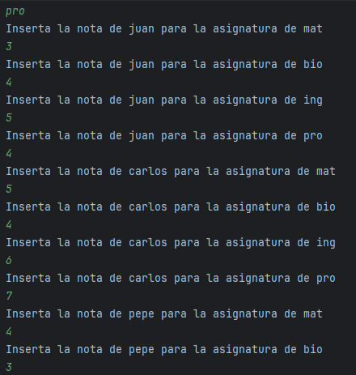

Un profe necesita ayuda para almacenar las notas de su alumnado.
Quiere guardar en una matriz el nombre de sus estudiantes junto a las notas obtenidas por asignatura, de la siguiente manera:
a) Diseña un programa que pregunte cuántos estudiantes tiene al usuario. Pregunta también cuántas asignaturas.
b) Crea una matriz lo suficientemente grande para almacenar la información que necesita el usuario.
c) Rellena la matriz con los nombres y asignaturas requeridas por el profesor (debe introducirlos por teclado). Los nombres se deben almacenar a lo largo de la primera columna, y las asignaturas a lo largo de la primera fila (a excepción de la posición 0, donde aparecen los nombres del alumnado).
d) Una vez tenemos la matriz como en la tabla anterior, pediremos las notas por alumno. Es decir, deberemos insertar todas las materias para Juan antes de pasar a insertar todas las materias de Pepe.

e) Cuando ya tengamos la matriz completa, realizaremos los siguientes cálculos:
- Nota media de todas las asignaturas por alumno.
- Nota media por asignaturas.